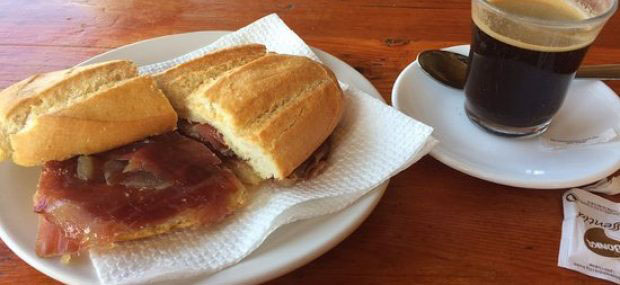
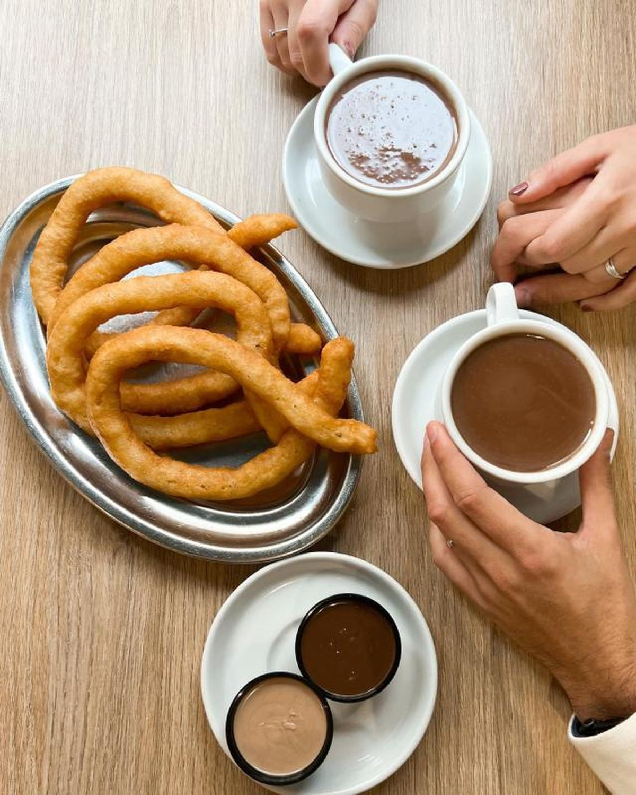
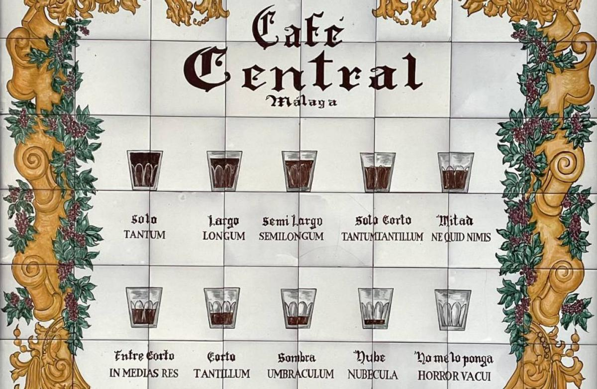
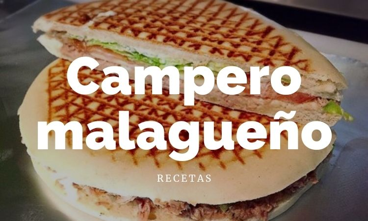
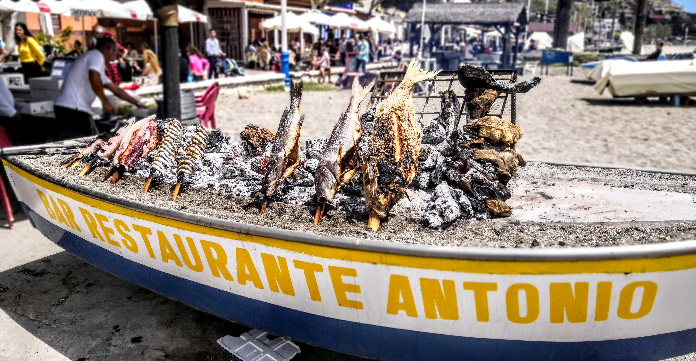
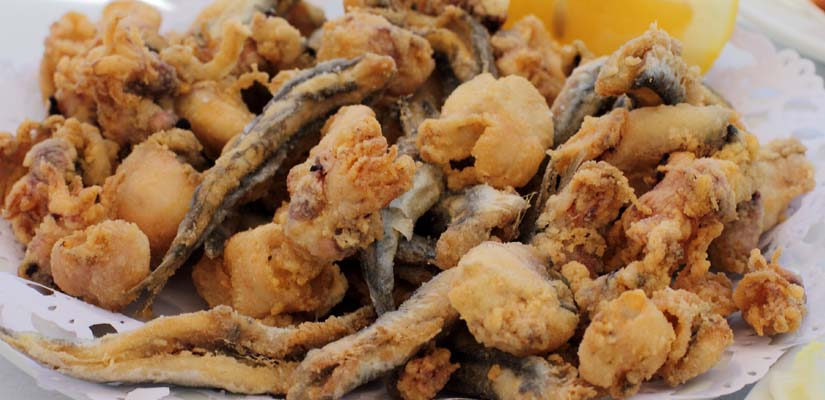
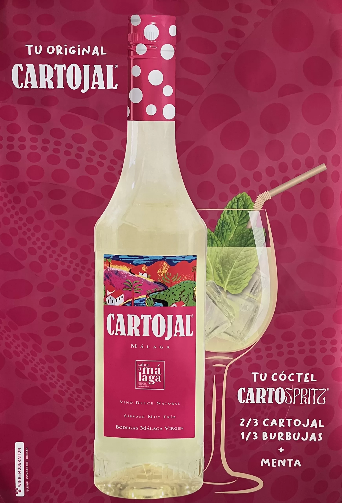
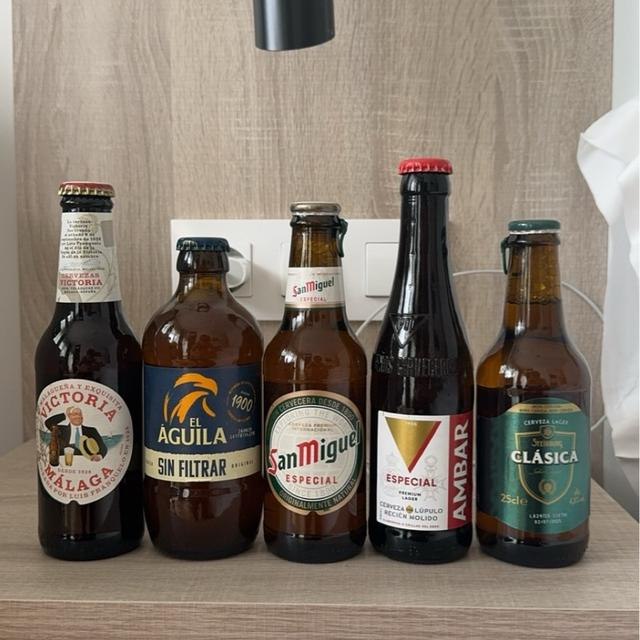
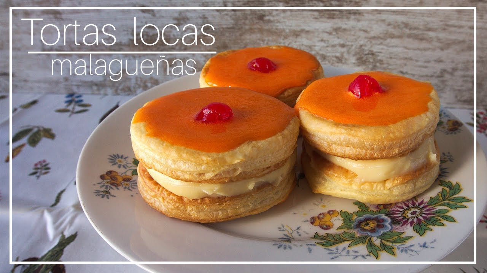

Guía de supervivencia gastronómica en la ciudad de Málaga
Este fin de semana del 9 de mayo no solo vamos a darlo todo celebrando, sino que también nos vamos a poner las botas. Mis ocho años por tierras andaluzas me permiten dejaros en las siguientes líneas cuáles son las comidas más típicas de Málaga, y en algunos casos de Andalucía, que tenéis que probar sí o sí si no lo habéis hecho ya:
Desayuno:
- Los Pitufos: No, no nos vamos a comer a los dibujos animados. Un "pitufo" es un panecillo pequeño, tostadito, con un buen chorreón de aceite de oliva, tomate triturado y jamón...

- Los Tejeringos: No hay nada mejor que unos churros un domingo por la mañana después de darlo todo. En Málaga tenéis que buscar los "tejeringos" que son los churros típicos de aquí.

- Los cafés en Málaga: En Málaga no se pide un simple "café con leche", aquí tienen su propio idioma dependiendo de la proporción exacta. Si queréis poca cantidad de café, pedid un sombra o una nube. Si queréis mitad y mitad, un mitad, y si queréis más café que leche, un mitad doble. ¡Avisadas estáis!.

Comidas:
- El Campero: El rey absoluto del fast food malagueño. Es un bocadillo hecho con un pan redondo y crujiente, que se tuesta en la plancha. El clásico lleva pollo asado, jamón york, queso, lechuga, tomate y mayonesa. Esto sí que es un MUST!

- Los Espetos de Sardinas: El sabor oficial de las playas de Málaga son las sardinas espetadas. Pero OJO, que no os timen! los espetos son un plato tradicionalmente muy barato, por lo que NUNCA paguéis más de 4 euros por 6 espetos o estaréis siendo ESTAFADAS :(

- El Pescaíto Frito: No nos podemos ir sin pedirnos una ración de fritura malagueña. Calamares, puntillitas y, por supuesto, los boquerones al limón ¡por algo a los malagueños se les llama cariñosamente "boquerones" y la mascota del Málaga es un boquerón!!.

Alcohol:
- El Cartojal: Se bebe súper frío en su mítica botella rosa con lunares. Ojito, que entra como el agua pero se sube rápido.¡Un brindis con Cartojal no es opcional, es una orden!

- Cervezas malagueñas:
- Cerveza Victoria: Es LA cerveza de Málaga por excelencia. Su lema lo dice todo: "Malagueña y Exquisita".
- Cerveza San Miguel: ¡El otro gran clásico que no puede faltar en vuestras rondas! Así que, ya seáis del Team Victoria o del Team San Miguel, ¡aquí lo importante es que la caña esté bien helada para brindar por la novia!

Dulce:
- Las Tortas Locas: ¡El toque dulce de la despedida! Es el pastel más mítico de la ciudad: dos capas de hojaldre rellenas de crema pastelera, cubiertas por un glaseado naranja chillón y coronadas con media guinda. Un "chute" de azúcar espectacular para que no decaiga el ritmo.
